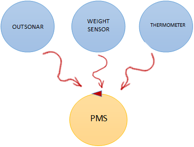

Requirements
Sprint 1 Backlog
Starting point

Problem analysis
PMS
Communication summary
Transport trolley
Outsonar
Thermometer
The sprint 1 should be done in
one week.
Project
Starting from the
logical architecture and from the
product backlog we can now "zoom in" and design the entities pointed out in the analysis.
To better manage complexity, it is advisable to adopt a “divide et impera” approach and follow the principle of single responsibility, thus making the system less fragile and more easily modifiable.
To help these needs, a
hexagonal architecture will be used as it allows a more agile interaction with different entities and subjects.
PMS
Considering what has been said in the analysis phase and for how the architecture is conceived, the sensor management and trolley transport management
tasks can be represented by two separate entities:
- dataCollector: manages data from outsonar, weightsensor and thermometer received as events and makes this data available to the business logic throught an interface;
- actuatorsController.
The
actuatorsController will subsequently also manage the
fan,
the second actuator present in the system. Furthermore, another actor is introduced, the businessLogic which will represent the business logic of the service,
this is to separate responsibilities.
To develop a hexagonal architecture several adapters have been developed.
Communication:
Transport trolley
Outsonar
Weightsensor
Thermometer
Testing
Deployment
Maintenance
By studentName email: giuseppe.cristaudo@studio.unibo.it, filippo.manfreda@studio.unibo.it, enrico.andrini@studio.unibo.it